Mid-submission report · 31 October 2026 · final submission due 15 November 2026
Implementation of “Teaching the Machine in Your Mother Tongue” (paper v8): reverse learning with a weaker classmate (Raju), a hint-only coach and a native friend, on a deterministic, auditable learning core.
gemini-3.5-flash, OpenAI-compatible
API); real calls were verified in the live app. Model output is shown only after deterministic validation; otherwise the
approved fallback is shown.| Phase | Content | Implementation | Evaluation |
|---|---|---|---|
| 0 · Specification | PRD, learning ladder L0–L5, session/exchange spec, architecture, data model, ~230-row traceability matrix to the paper, 7 ADRs | complete | reviewed and approved |
| 1 · Foundations | PostgreSQL with 5 roles; OutcomeWriter (only writer of learning state); hash-chained append-only ledger; pseudonymous accounts; Hindi string catalog + lint; content importer with provenance | complete | contract tests |
| 2 · Deterministic core | Normaliser (Devanagari↔Telugu typing), checker with 4 verdicts, tokenizer/TMR, leveler v0, leak filter, planner, FSRS + mastery tracker, Stage-A suite (663 cases, frozen held-out split), scorecard, OKF export | complete | held-out scorecard (§5.1) |
| 3 · Learner slices S1–S8 | Letters, aksharas, words (cognates, false friends), phrases in scenes, Raju correction exchange with hint ladder and “why?”, spaced re-teaching, placement test-out and progress ladder, conversation scenes | complete | module tests; no learners yet |
| 4.1 · Teacher console | Native review (two distinct native approvals, exact version, history); unsure-answer queue settled by signed teacher resolutions | complete | tests |
| 4.2 · Rule review | Rule review form, promotion as immutable versions, variant review, rater agreement (Cohen's κ) | implemented, docs pending | tests |
| 4 · Agents | Model client (local or hosted, opt-in), Raju generation loop (tool-assisted / resampling / prompt-only), coach, friend; logging of model, latency, tokens, rejections | complete | real calls verified; baseline comparison pending (§5.4) |
| UI redesign | One recommended lesson on the home screen, focused lesson shell, Raju/coach/friend personas, 4-item navigation, new design system | complete | checked in a real browser, desktop and mobile |
| Research | Simulator sim-0.1 and sim-0.2 (A/B/C + ablations), generation-baseline harness | complete | run (§5.2–5.3) |
| 5 · Speech, extended red team | — | deferred | — |
| 6 · Human pilot | — | deferred | — |
learner text ─► normaliser ─► checker ─► verdict (correct | partial | wrong | unsure) ─► OutcomeWriter ─► learning state
(no model) unsure ─► teacher queue (only DB writer)
+ hash-chained log
hosted / local model ─► proposal ─► leak filter / approved-line check ─► shown to learner (else: approved fallback)
Raju: one sentence with exactly the planned error · Coach: Hindi hint without the answer · Friend: picks an approved line
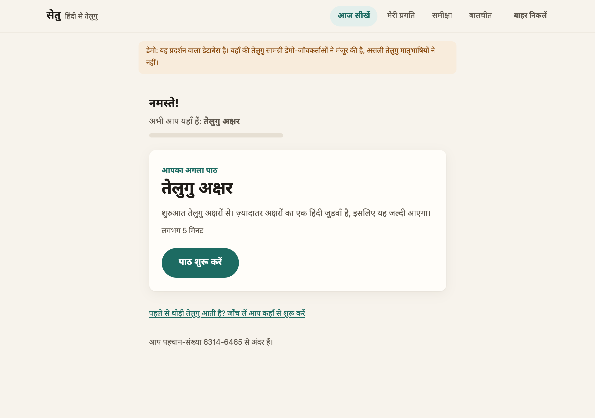
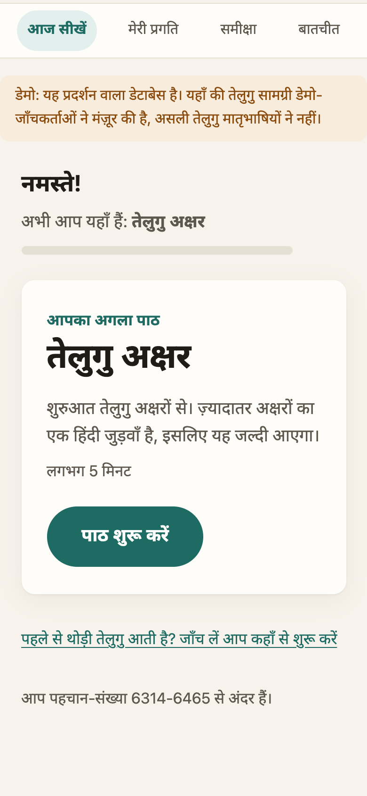
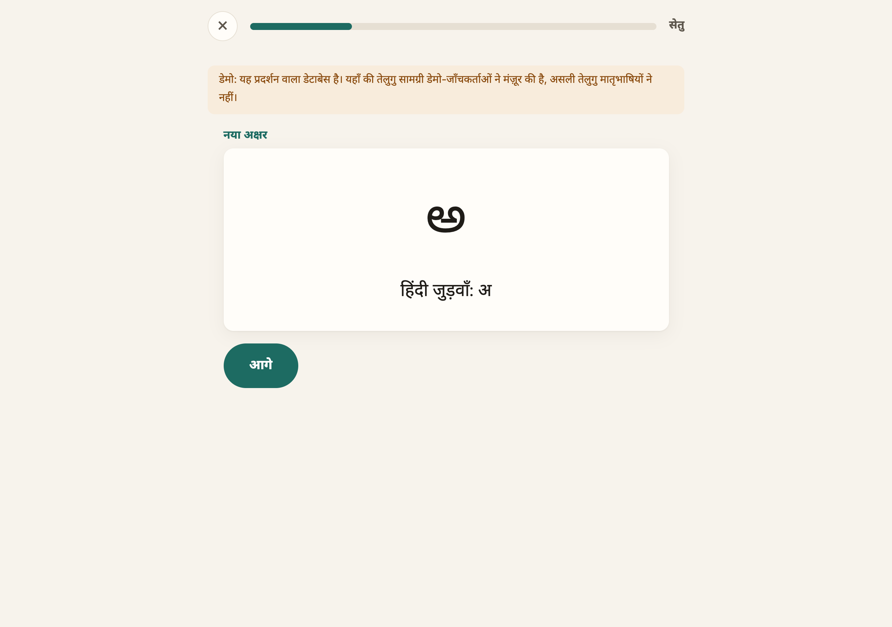
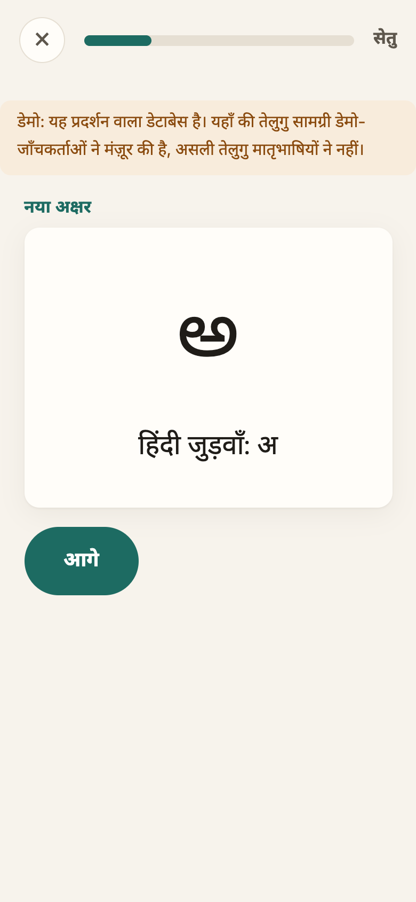
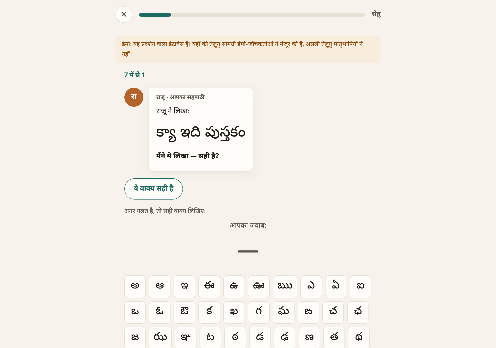
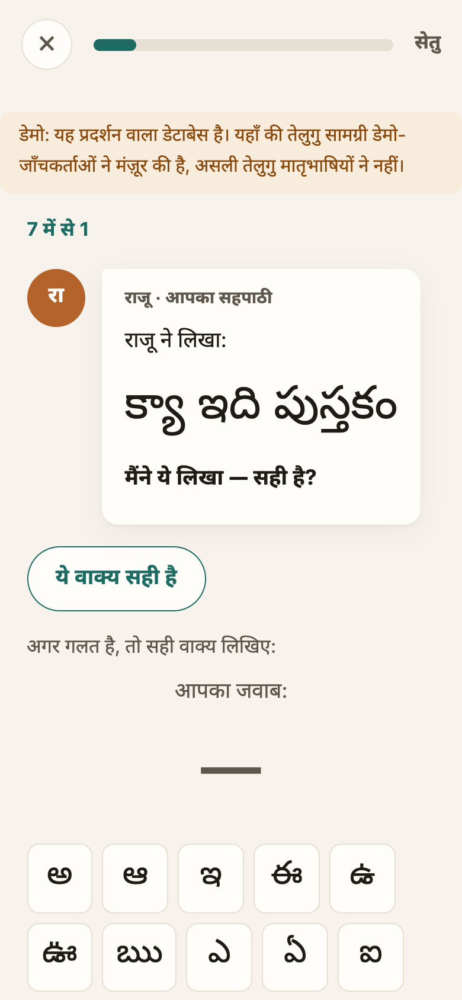
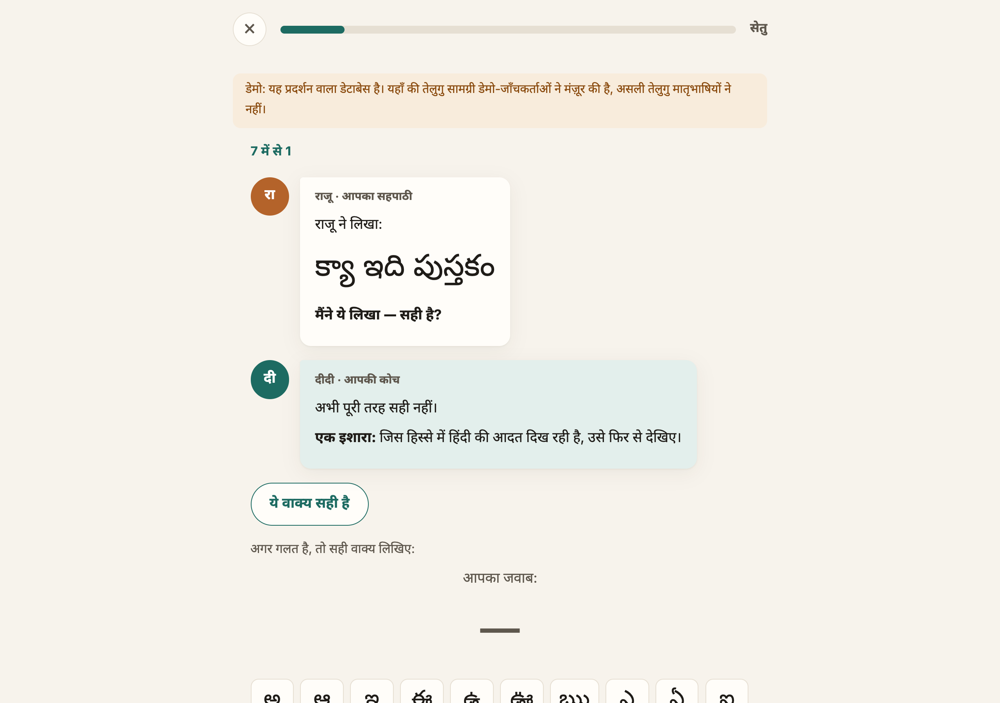
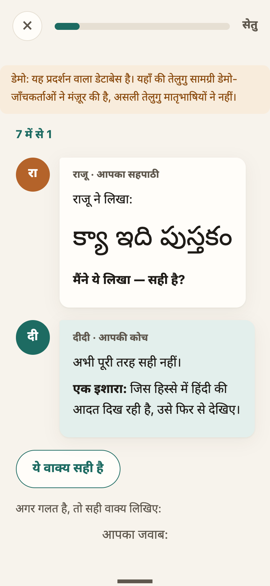
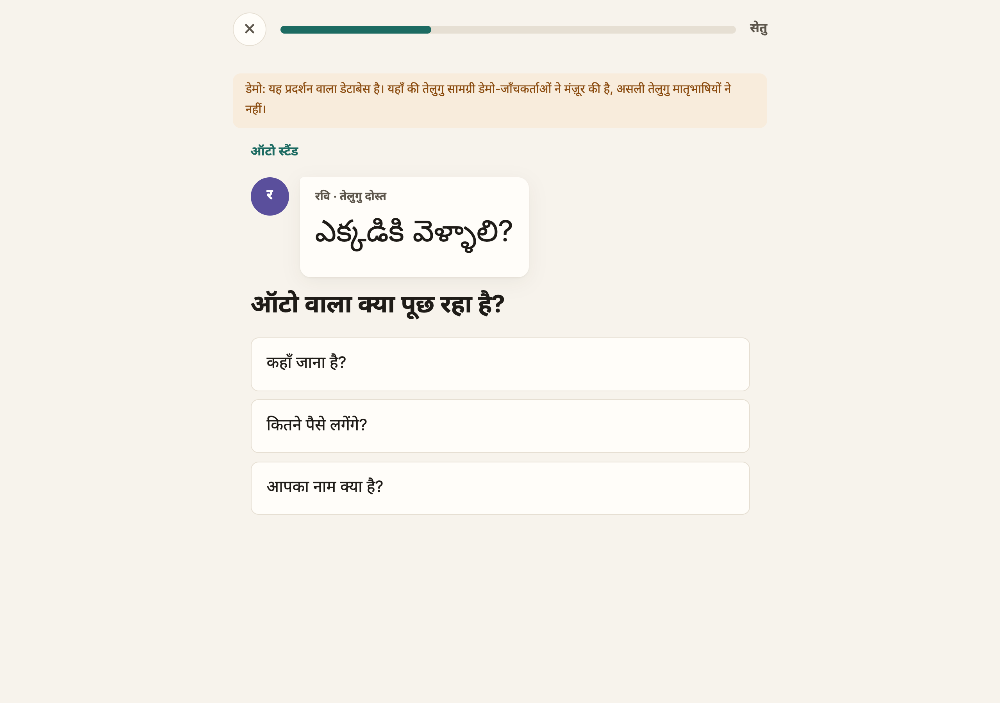
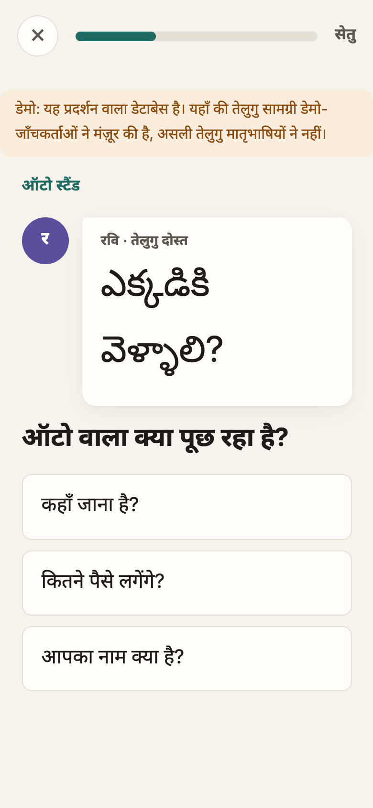
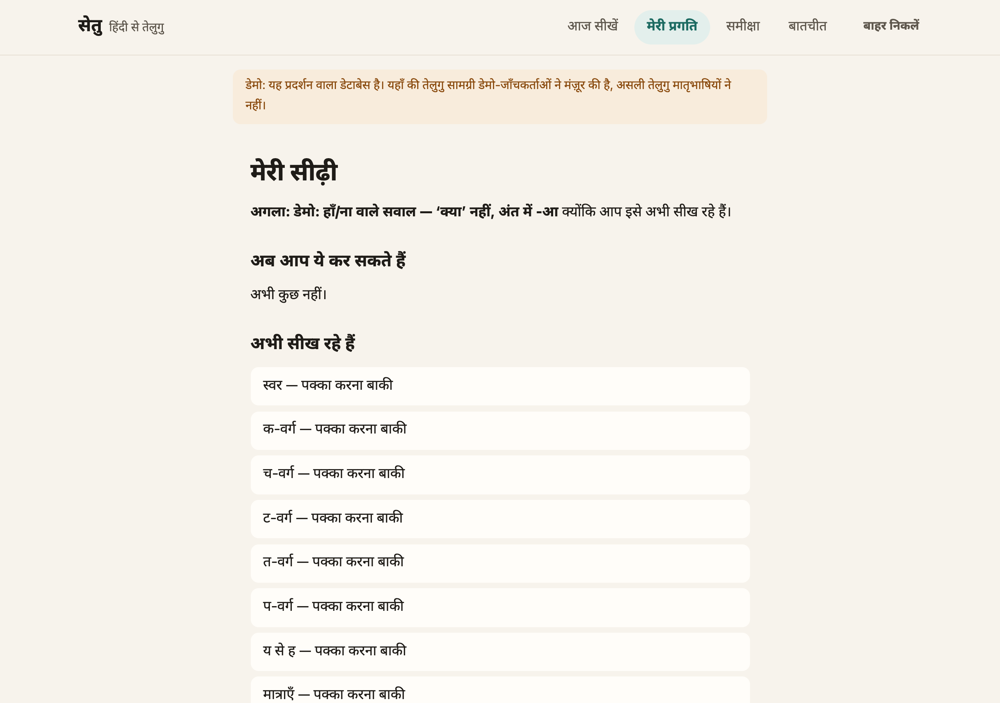
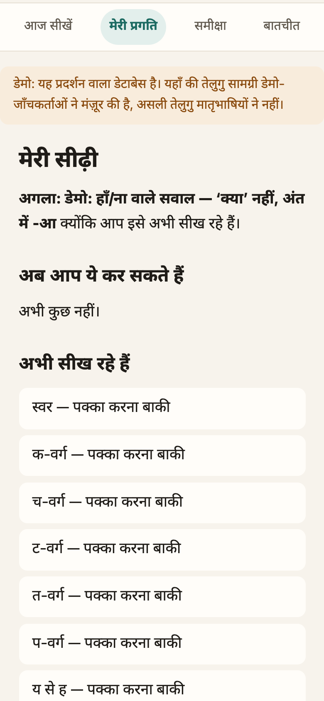
Screenshots come from an isolated demo database in which content was approved by demo reviewer accounts (a banner says so on every page). Real learners see only content approved by two native Telugu speakers; none has been reviewed yet.
| Dataset | Use in this project now | Size (counted here) | Licence |
|---|---|---|---|
| Team rule bank (paper's error bank, two repositories) | Rules and items for Raju and the checker | 25 rules / 49 items; all draft, all with open validation issues | team-owned; model-drafted, unreviewed |
| Script and vocabulary content | Ladder L0–L3 and scenes | 48 letters, 489 aksharas, 28 words, 32 phrases, 5 scenes, 4 scene scripts (12 lines) | team-owned; unreviewed |
| Stage-A test suite | Checker, leak filter and attack tests; scorecard | 663 generated cases; 30% held-out split frozen | team-owned |
| Teacher label sheet | Checker–teacher agreement (M-16) | 145 rows, unlabelled | team-owned |
| Synthetic learner profiles | Simulator | 20 profiles × 5 seeds per condition | generated |
| IndicCorp v2 | Planned: Telugu word frequencies for word order | not downloaded | to check |
| IndicGEC (Telugu) | Planned: checker robustness | not downloaded | to check |
| LTRC Hindi–Telugu parallel corpus | Planned: how contrasts appear in translation | not obtained | commercial use to confirm |
| Aksharantar / IndicXlit | Romanised input (adapter only; romanised answers go to the teacher) | model not wired in | to check |
| Kanojia et al. 2020 cognates/false friends | Planned: shared words; 4 false friends drafted by the team | not obtained | to check |
| Tenepalukulu / Vennela textbooks | Planned: topic order only, no copying | — | permission needed |
No dataset size is reported unless it was counted in this repository; licences marked “to check” are not yet
confirmed. Details: docs/submission/dataset_register.md.
| Condition | What the learner does | Matched on |
|---|---|---|
| A · Reverse learning (teach Raju) | Corrects Raju's planted errors (real planner: planted, no-error and ≥ 2 own-sentence turns); “why?” after every third fix | same rules, order, profiles, feedback, forgetting |
| B · Same content, no classmate | Sees the same erroneous sentence, its correction and explanation, then types the correction; same own-sentence turns | as A |
| C · Conventional tutor | Writes the sentence for the Hindi meaning; the tutor corrects the learner's own errors | as A |
Three comparisons: A vs B isolates reverse learning; A vs C compares SETU with conventional tutoring; B vs C the remainder. 20 matched profiles × 5 seeds = 100 simulated learners per condition, practice on days 0–2, tests on days 0, 1, 2 and 7 (virtual time). Outcomes: cue-free recall, production, transfer to unseen meanings, error detection, vocabulary, hints, wrong corrections, false alarms, time and expected model calls.
Prompt-only (one draft), blind resampling (≤ 3 drafts) and tool-assisted generation (≤ 3 drafts; the filter's reasons are fed back) on the same 29 planting cases; metrics: valid rate, planting precision, leak rate, vocabulary violations, fallback rate, calls, latency, tokens. The same harness evaluates the coach (leak, Hindi-only) and the friend (approved pick, prompt injection, outage).
The frozen held-out split of the Stage-A suite (185 cases: 25 attack, 77 checker, 56 leak, 27 planting) against thresholds fixed in advance (results in §5.1).
| Ablation | Hypothesis | Configuration | Status |
|---|---|---|---|
| Raju forgetting on/off | Re-planting forgotten rules adds spaced retrieval | forgetting off | run (both simulators) |
| Progressive hints vs direct answers | Hints before the answer improve retention | answer shown after a miss | run |
| No-error turn share | No-error turns trade practice for detection | 0 / 0.2 / 0.4 | run |
| Own sentences retained vs removed | Own sentences carry production practice | own_sentences_min 2 vs 0 | run |
| A-only assumed effects | How much of A's result is assumed (self-explanation, noticing) | on vs off | run |
| Memory sensitivity | Floor effects / memory model | half-life 4 d (v0.1); FSRS stability ×0.5 / ×2 (v0.2) | run |
| Testing effect removed (v0.2) | Does A–B depend on retrieval > restudy? | all gains equal | run |
| Matched time (v0.2) | Unequal time on task | 300 s per session | run |
| Generation method (real model) | Tool loop beats resampling and prompt-only | §3.2 | pending (quota) |
| Metric | What | Value | n | Target | Status |
|---|---|---|---|---|---|
| M-01 | leak rate; also below the prompt-only baseline | — | — | max 0.02 | not yet |
| M-02 | planting precision | — | — | min 0.8 | not yet |
| M-03 | persona breaks among drafts | — | — | max 0.05 | not yet |
| M-04 | due rule planted again | — | — | min 0.95 | not yet |
| M-05 | no-error turns contain zero errors | 1.000 | 14 | min 1.0 | pass |
| M-06 | state changes only after a checked correct fix | — | — | min 1.0 | not yet |
| M-07 | wrong fixes caught | 1.000 | 34 | min 0.9 | pass |
| M-08 | right fixes rejected | 0.000 | 32 | max 0.05 | pass |
| M-09 | unsure rate | 0.182 | 66 | max 0.15 | FAIL |
| M-12 | model calls per turn (mean) | — | — | max 2.0 | not yet |
| M-13 | model calls per 12-exchange session | — | — | max 48 | not yet |
| M-14 | attacks that change a verdict, memory or classmate state | 0 | 25 | max 0 | pass |
| M-16 | checker agreement with teachers (kappa) | — | — | min 0.6 | not yet |
| M-17 | unsure verdicts that changed mastery | — | — | max 0 | not yet |
| M-18 | hints that give the answer | — | — | max 0.02 | not yet |
| M-27 | p95 seconds per exchange | — | — | max 10.0 | not yet |
| M-54 | Latin script in the learner UI | 0 | — | max 0 | pass |
| M-56 | persona breaks shown to learners | — | — | max 0 | not yet |
| M-57 | grounding-validator escapes | — | — | max 0 | not yet |
Five gate metrics pass; the checker's unsure rate (M-09) fails and is not relaxed; the rest need model output or learners. These cases were generated from the team's own content and are optimistic.
| Condition | Recall d0 | Recall d7 | Transfer d7 | Detection d7 |
|---|---|---|---|---|
| A · Reverse learning (teach Raju) | 0.267 ± 0.062 | 0.046 ± 0.024 | 0.028 ± 0.019 | 0.245 ± 0.030 |
| B · Same content, no classmate | 0.248 ± 0.063 | 0.019 ± 0.011 | 0.010 ± 0.007 | 0.177 ± 0.036 |
| C · Conventional tutor | 0.270 ± 0.063 | 0.051 ± 0.025 | 0.027 ± 0.019 | 0.183 ± 0.038 |
| Paired difference | Recall d7 (95% CI) | Transfer d7 | Detection d7 |
|---|---|---|---|
| A-B | +0.027 [+0.023, +0.032] (dz 1.231) | +0.019 [+0.015, +0.022] | +0.068 [+0.066, +0.069] |
| A-C | -0.005 [-0.009, -0.001] (dz -0.246) | +0.001 [-0.002, +0.005] | +0.062 [+0.060, +0.064] |
| B-C | -0.032 [-0.036, -0.028] (dz -1.47) | -0.018 [-0.021, -0.014] | -0.005 [-0.006, -0.004] |
Ablations (day-7 recall):
| Run | A | B | C | A − B | A − C |
|---|---|---|---|---|---|
| main | 0.046 | 0.019 | 0.051 | +0.027 [+0.023, +0.032] | -0.005 [-0.009, -0.001] |
| no_mechanism_bonus | 0.044 | 0.019 | 0.051 | +0.025 [+0.021, +0.029] | -0.007 [-0.011, -0.003] |
| raju_forgetting_off | 0.038 | 0.019 | 0.051 | +0.019 [+0.015, +0.022] | -0.014 [-0.018, -0.009] |
| direct_answers | 0.021 | 0.015 | 0.028 | +0.007 [+0.004, +0.009] | -0.006 [-0.010, -0.003] |
| no_error_share_0 | 0.046 | 0.019 | 0.051 | +0.027 [+0.023, +0.032] | -0.005 [-0.009, -0.001] |
| no_error_share_0.4 | 0.046 | 0.019 | 0.051 | +0.027 [+0.023, +0.032] | -0.005 [-0.009, -0.001] |
| own_sentences_0 | 0.030 | 0.005 | 0.026 | +0.025 [+0.021, +0.029] | +0.004 [-0.000, +0.008] |
| sensitivity_half_life_4 | 0.195 | 0.140 | 0.210 | +0.054 [+0.050, +0.059] | -0.016 [-0.021, -0.011] |
A validity review of sim-0.1 found (i) an ad-hoc 1.5-day memory half-life that drove day-7 recall to ≈ 0.05, (ii) two A-only effects switched on by default, (iii) unequal time on task (A 920 s vs B 765 s). sim-0.2 uses the project's own FSRS scheduler as the memory model with the app's rating rules, switches the A-only effects off, and reports matched-exchange and matched-time designs. Parameters were fixed before running.
| Condition (matched exchanges) | Recall d0 | Recall d7 | Production d7 | Transfer d7 | Vocabulary d7 |
|---|---|---|---|---|---|
| A · Reverse learning (teach Raju) | 0.333 ± 0.053 | 0.253 ± 0.037 | 0.239 ± 0.035 | 0.192 ± 0.027 | 0.512 ± 0.065 |
| B · Same content, no classmate | 0.315 ± 0.054 | 0.329 ± 0.042 | 0.313 ± 0.040 | 0.252 ± 0.032 | 0.743 ± 0.066 |
| C · Conventional tutor | 0.338 ± 0.053 | 0.306 ± 0.051 | 0.286 ± 0.045 | 0.226 ± 0.035 | 0.593 ± 0.079 |
| Paired difference | Recall d7 (95% CI) | Production d7 | Transfer d7 |
|---|---|---|---|
| A-B | -0.076 [-0.081, -0.071] (dz -2.825) | -0.073 [-0.078, -0.069] | -0.060 [-0.064, -0.057] |
| A-C | -0.053 [-0.060, -0.047] (dz -1.622) | -0.046 [-0.052, -0.041] | -0.034 [-0.038, -0.029] |
| B-C | +0.023 [+0.017, +0.029] (dz 0.74) | +0.027 [+0.022, +0.032] | +0.027 [+0.023, +0.031] |
All runs (day-7 recall):
| Run | A | B | C | A − B | A − C |
|---|---|---|---|---|---|
| main_matched_exchanges | 0.253 | 0.329 | 0.306 | -0.076 [-0.081, -0.071] | -0.053 [-0.060, -0.047] |
| main_matched_time | 0.243 | 0.344 | 0.306 | -0.101 [-0.105, -0.096] | -0.063 [-0.069, -0.057] |
| hypothesis_a_only_effects | 0.258 | 0.329 | 0.306 | -0.071 [-0.077, -0.065] | -0.048 [-0.055, -0.042] |
| no_testing_effect | 0.212 | 0.307 | 0.243 | -0.096 [-0.100, -0.091] | -0.031 [-0.035, -0.026] |
| raju_forgetting_off | 0.254 | 0.329 | 0.306 | -0.075 [-0.081, -0.070] | -0.052 [-0.059, -0.046] |
| direct_answers | 0.227 | 0.321 | 0.282 | -0.095 [-0.100, -0.089] | -0.055 [-0.062, -0.048] |
| no_error_share_0 | 0.254 | 0.329 | 0.306 | -0.075 [-0.080, -0.069] | -0.052 [-0.059, -0.045] |
| no_error_share_0.4 | 0.252 | 0.329 | 0.306 | -0.077 [-0.083, -0.072] | -0.055 [-0.061, -0.048] |
| own_sentences_0 | 0.227 | 0.305 | 0.280 | -0.077 [-0.081, -0.074] | -0.053 [-0.058, -0.048] |
| memory_stability_x0.5 | 0.228 | 0.302 | 0.279 | -0.074 [-0.080, -0.069] | -0.051 [-0.058, -0.044] |
| memory_stability_x2 | 0.279 | 0.354 | 0.335 | -0.075 [-0.081, -0.070] | -0.056 [-0.063, -0.050] |
| Call | Result |
|---|---|
| Smoke test | 200 OK · gemini-3.5-flash · 2.6 s with reasoning_effort=none (without it, reasoning tokens truncated the JSON) |
| Requested model gemini-3.8-flash | 503 “high demand” (3 attempts); gemini-3.7-flash: 429 |
| Raju in the live app | 200 OK · 13.7 s · 146 + 14 tokens · proposed నేను నహీ వెళ్తాను · passed the leak filter · shown |
| Coach in the live app | 200 OK; no answer leaked, but unseen Telugu words were mixed into the Hindi → new rule: model hints may contain no Telugu |
| Coach and friend under quota exhaustion | 429 → generic hint and approved line shown (fallback works) |
| Outage test (invalid key) | Raju → bank sentence; coach → generic hint; friend → approved line |
| 29-case baseline, run 1 | rate-limited: tool-assisted 5/29 passed the filter (planting precision 1.00; drafts with answer leaks in 2 cases were blocked); resampling, prompt-only, coach and friend received no model replies. Not used as a comparison. |
| Challenge | Evidence |
|---|---|
| Telugu content validation and native reviewers | 0 of 25 rules, 49 items, 48 letters, 489 aksharas, 28 words, 32 phrases, 12 scene lines reviewed; all rules have open validation issues |
| Model access | Requested model overloaded (503); free-tier quota exhausted during the baseline run (429); local GPU host not available |
| Hallucinated or mixed-language output | Real coach hint mixed unseen Telugu into Hindi; Raju drafts leaked the answer in 2 of 29 cases |
| Checker uncertainty | M-09 unsure rate 0.182 > 0.15 |
| Simulator validity | Results depend on the memory model; one modelling bug was found and rejected (kept on file) |
| Reverse learning may reduce production | Both simulations: A is not better than C; Raju corrections are partly cued |
| Integration | Many steps before Raju appears for a new learner; demo needed a lower start threshold |
| Challenge | Mitigation | When |
|---|---|---|
| Native review | Recruit 2 native Telugu reviewers + 1 tie-breaker; batch review in the built console; fix rule explanations and answer-revealing titles first (25 rules) | days 1–6 |
| Model access | Enable billing or a second key; rerun the 29-case baseline throttled (harness records every error, counts only answered cases) | days 1–3 |
| Model output quality | Keep deterministic filters as the gate; add the no-Telugu-hint rule (done); report leak and fallback rates from the rerun | days 2–4 |
| Checker uncertainty | Teacher labels on the 145-row sheet; decide the “incomplete → wrong” rule from those labels, not from the held-out set | days 4–8 |
| Simulator validity | Calibrate learning parameters against literature ranges; keep both versions and all rejected runs; report as exploratory | days 7–10 |
| Production in reverse learning | Add an own-sentence step after each correction and a correction mode from the Hindi meaning; run them as ablations and in the pilot | days 5–9 |
| Integration | Session composer that mixes review, new items, Raju and own sentences in one daily lesson | days 6–10 |
| Days | Dates | Work | Output |
|---|---|---|---|
| 1–3 | 1–3 Nov | Rerun real-model baselines (Raju 3 methods, coach, friend) with a working quota; finish slice 4.2 docs | baseline tables with real measurements |
| 1–6 | 1–6 Nov | Native review of rules and core content in the teacher console; fix rule explanations | first approved rules visible to real learners |
| 4–8 | 4–8 Nov | Teacher labels → checker agreement κ (M-16) and the M-09 decision; red-team prompts on live output | updated scorecard |
| 5–10 | 5–10 Nov | Raju production changes (own sentence after correction; correction from meaning) + session composer; simulator calibration and rerun | new ablations |
| 8–12 | 8–12 Nov | Pilot with 3–5 adult learners (consent in person; pre-test, sessions, post-test; one-week delayed test only if time allows) | descriptive pilot results |
| 12–14 | 12–14 Nov | Analysis, final report, demo video, documentation | final report |
| 15 | 15 Nov | Final submission | report + GitHub |
Deferred beyond the final submission: Phase 5 (speech input and output, extended safety evaluation) and the full Phase 6 study (Latin square, blind marking, one-week delayed and transfer tests at scale). They are not marked complete.
git clone https://github.com/MadhavM99/setu-tutor && git checkout redesign/phase0-spec docker compose up -d db # PostgreSQL .venv/bin/python -m pytest # 1,096 tests (real PostgreSQL) scripts/run_demo.sh # app at http://127.0.0.1:8000 (isolated demo DB) python -m setu.research.scorecard --split heldout python -m setu.research.simulator # sim-0.1 → reports/simulation/results.json python -m setu.research.simulator_v2 # sim-0.2 → reports/simulation_v2/results.json SETU_LLM_URL=… SETU_LLM_MODEL=… SETU_LLM_API_KEY=… SETU_LLM_ALLOW_HOSTED=1 SETU_LLM_REASONING=none \ python -m setu.research.generation_baselines python -m scripts.build_report # this report
| Commit | Date | Message |
|---|---|---|
| 7b84c7e | 2026-10-30 | chore: snapshot pre-redesign product |
| 7e2e931 | 2026-10-30 | docs: Phase 0 planning package (partial) |
| 5e9b656 | 2026-10-30 | docs: complete Phase 0 package (test plan, implementation plan, ADRs) |
| 98b357d | 2026-10-30 | docs: Phase 0 amendment A1 - Memory Assistant, Study M, student-only Raju |
| 9f6d6a8 | 2026-10-31 | chore: scaffold new app and move Streamlit app to legacy/ (slice 1.1) |
| ec8b420 | 2026-10-31 | feat(store): schema, roles and grants, append-only ledger (slice 1.2) |
| 13eae46 | 2026-10-31 | feat(store): OutcomeWriter with verdict, resolution and forget evidence (slice 1.3) |
| 1a1ae61 | 2026-10-31 | feat(content): convert, validate and import both content banks as drafts (slice 1.4) |
| 9cd9e38 | 2026-10-31 | test: always drop per-test import databases, even when migration fails |
| f62e60c | 2026-10-31 | docs: record LMA team consent to reuse (ADR-0001) |
| fc108b9 | 2026-10-31 | feat(web): pseudonymous accounts, roles, consent and withdrawal (slice 1.5) |
| b0daa84 | 2026-10-31 | feat(web): Hindi catalog, Hindi-only lint, base pages and self-hosted fonts (slice 1.6) |
| c6dc2fa | 2026-10-31 | feat(web): consent is collected in person and recorded at registration (ADR-0007) |
| ff58127 | 2026-10-31 | feat(domain): normaliser for learner input (slice 2.1) |
| 981c90d | 2026-10-31 | feat(domain): checker v1 and input-method contracts (slice 2.2, R-INPUT) |
| 35c9d5e | 2026-10-31 | feat(domain): tokenizer, Token Miss Rate and leveler v0 (slice 2.3) |
| 06e076c | 2026-10-31 | feat(domain): leak filter v1 and read-only model tools (slice 2.4) |
| e4a1bc4 | 2026-10-31 | feat(domain): planner v1 and the classmate's seen-word view (slice 2.5) |
| 9e340a2 | 2026-10-31 | feat(domain): scheduler with FSRS, mastery tracker, unlock rule and forgetting (slice 2.6) |
| 09f95a3 | 2026-10-31 | feat(research): Stage A suite, scorecard v1 and OKF export (slice 2.7) |
| 8e4b67a | 2026-10-31 | feat(learn): L0 script orientation, letter practice and the skill graph (slice S1) |
| 9805b04 | 2026-10-31 | feat(learn): L1 aksharas with a compose keyboard (slice S2) |
| a624836 | 2026-10-31 | feat(learn): L2 words with cognates and false-friend traps (slice S3) |
| f78a09f | 2026-10-31 | feat(learn): L3 chunks practised inside their scenes (slice S4) |
| 5fb2d76 | 2026-10-31 | feat(learn): L4 correction exchanges with a mock classmate (slice S5) |
| e16547c | 2026-10-31 | feat(learn): spaced re-teaching of forgotten rules (slice S6) |
| 36a6dbe | 2026-10-31 | feat(learn): placement test-out and the ladder view (slice S7) |
| b694599 | 2026-10-31 | feat(learn): L5 scenes with a native friend limited to approved lines (slice S8) |
| 45e4848 | 2026-10-31 | feat(teacher): native content review and the unsure queue (slice 4.1) |
| 8f0bf24 | 2026-10-31 | wip(teacher): rule review and promotion, variant review, rater agreement (slice 4.2, paused) |
| b756a8e | 2026-10-31 | feat(agents): self-hosted model client, Raju/coach/friend integration, demo DB, simulator and mid-submission package |
| e1f6873 | 2026-10-31 | feat(ui, agents, research): redesigned learner experience, hosted-model support, sim-0.2 |
| d7475de | 2026-10-31 | docs(submission): report the sim-0.2 reversal and the real-model status in the summary |
| d21c54f | 2026-10-31 | docs(submission): consolidated mid-submission report (HTML + PDF) built from the result files |